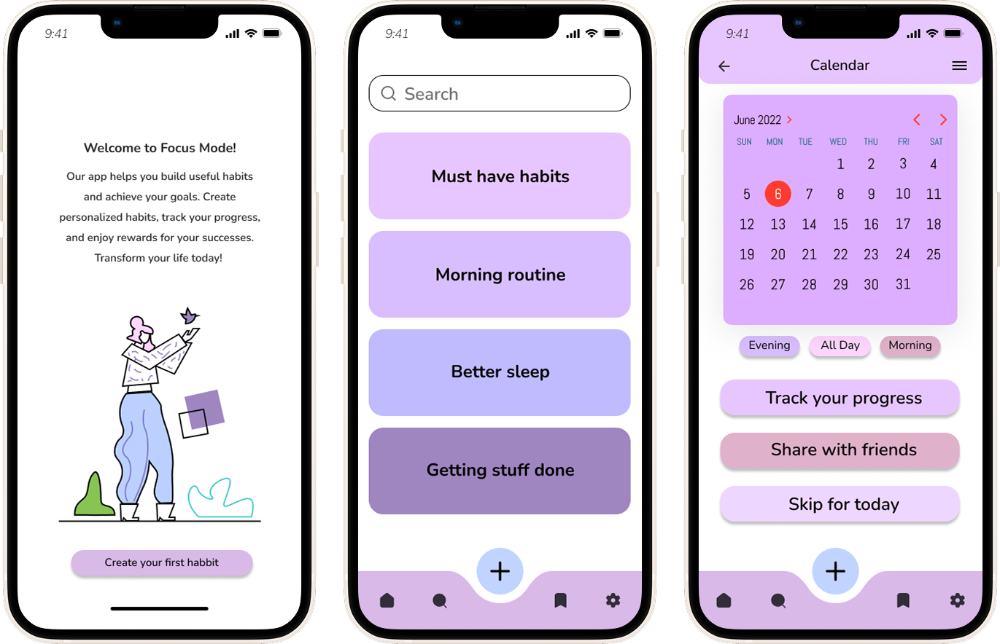
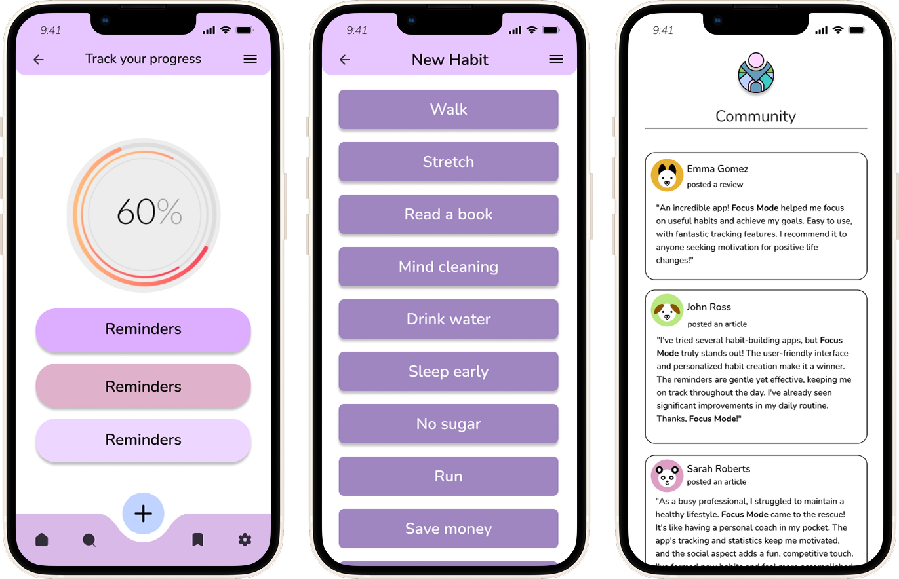
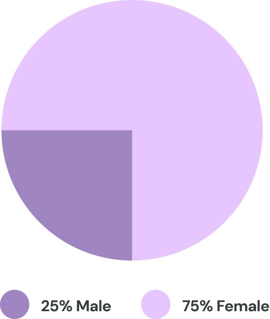
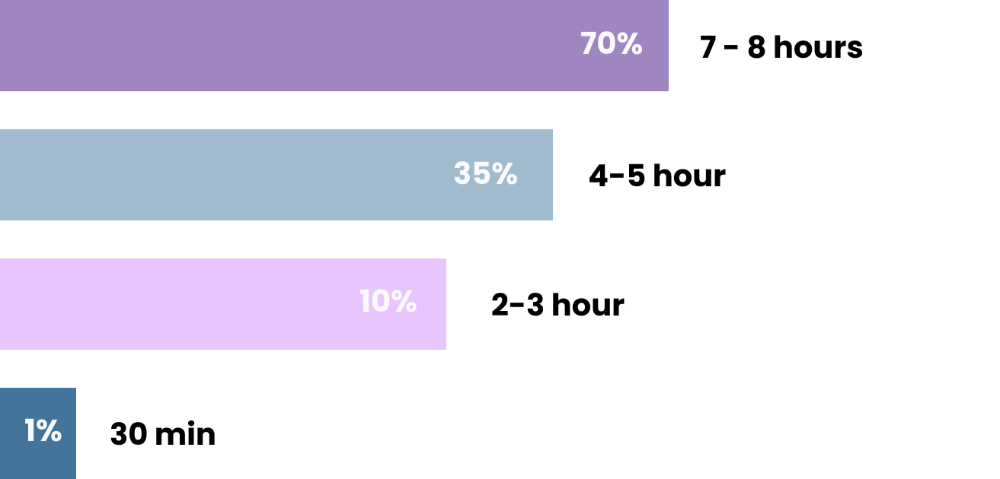
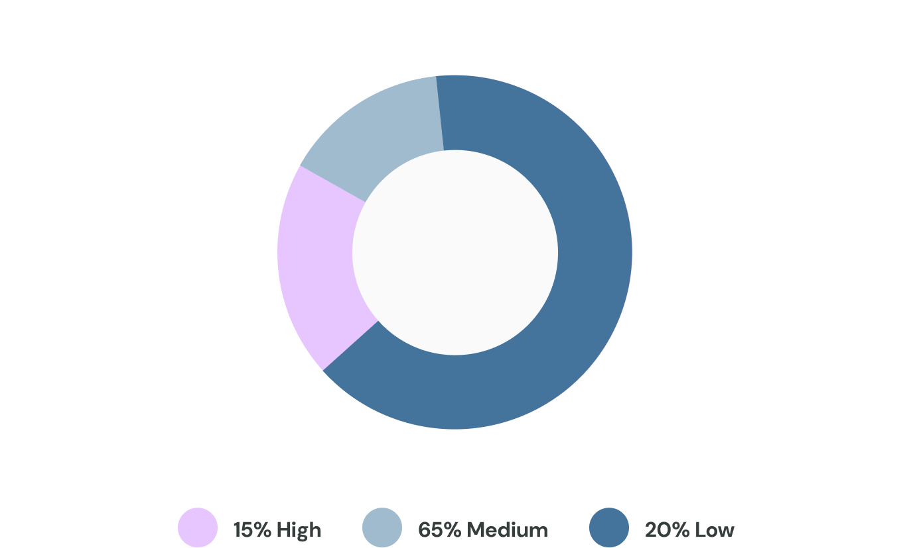
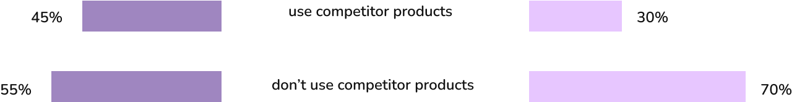
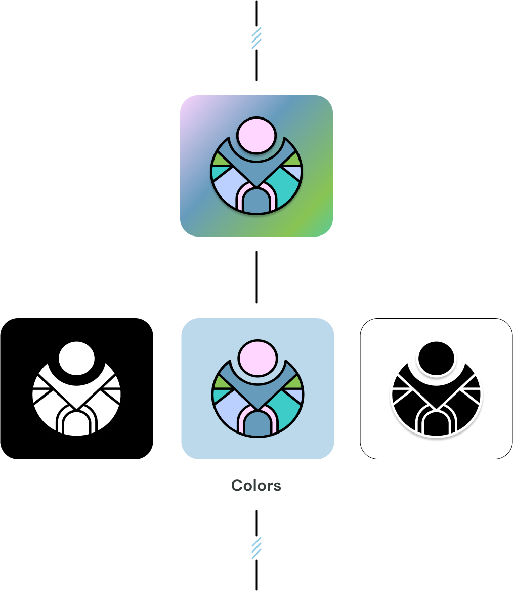

Project summary
Focus Mode is a self-initiated project designed to help users build and maintain healthy habits through structure and consistency. The concept introduces a system that supports daily goal tracking and personalized routines. To ensure adaptability, I created multiple user scenarios that reflect different social and behavioral contexts — from busy professionals to students and parents. The result is a flexible, user-centered design that encourages long-term habit formation in a simple and intuitive way.
My role
Solo designer responsible for the full product vision — from brand identity and business strategy to user experience and visual design.
The problem
Building and maintaining healthy habits can be challenging, especially in today’s fast-paced, distraction-heavy environments. Users often struggle with consistency, lack of motivation, and ineffective tracking methods. Existing tools can be either too generic or overly complex, failing to adapt to different lifestyles and personal goals. This project aims to solve these issues by providing a structured, intuitive, and motivating system that supports users in developing sustainable habits tailored to their unique needs.
Process
Research > Define > Iterate > Prototype
The solution
Focus Mode offers a structured and user-friendly solution to habit formation by combining visual clarity, personalization, and behavioral psychology principles. Key features include:
- Daily Routine Builder
- A flexible tool that lets users create and organize custom routines based on their personal goals and lifestyle.
- Progress Visualization
- Clear, motivating visualizations help users track their consistency over time and identify patterns in their behavior.
- Multi-Scenario Adaptability
- The system is designed around diverse user personas — students, professionals, parents — ensuring the experience feels relevant and accessible to different life contexts.
- Smart Reminders
- Non-intrusive, timely notifications help reinforce routines without causing alert fatigue or adding stress.
- Minimal and Calming UI
- A clean interface with a focus on focus — soft color palettes and minimal distractions enhance user engagement and mental clarity.
Together, these elements form a focused, user-centered environment that makes habit building not only easier, but genuinely enjoyable and sustainable.
The idea behind the interviews was to understand whether there is a real need for a user-centered habit-building tool and how effectively current solutions support consistency, motivation, and adaptability across different lifestyles.
Disciplined Achievers 🤓
Users who are already goal-oriented and have experience with habit tracking tools. They value data, consistency, and fine-tuned control over their routines. These users look for customizable features, visual feedback, and seamless integration with their daily workflows.
Lost-in-the-flow Users 😵
People who struggle with structure, motivation, or simply don’t know where to start. They often feel overwhelmed by traditional productivity apps and prefer gentle guidance, simplicity, and emotional support rather than strict systems.
And of course — there are people in between.
Many users shift between these two modes depending on life circumstances.
Focus Mode is designed to support that fluctuation by offering both flexibility and structure when needed.
Based on the user flows, I’ve created a new prototype covering the base functionality. It is currently under user testing - the goal is to improve the usability of the flows and to better the step process for the UX.


User research results
The following graphs are based on the results of a controlled research group. The participants have agreed on their answers being shared.

Daily screen time
The research group was asked to share how often they spend time on their phones. The participants have agreed on their answers being shared.

Technical literacy
The research group was asked to rate their level of technical literacy. The participants have agreed on their answers being shared.

Using competitor products
Under competitor products we included routine tracers; delivery apps and reminder apps. The participants have agreed on their answers being shared.

Bonus: Branding

Primary
Secondary
Tertiary
Neutrals
Error / Success